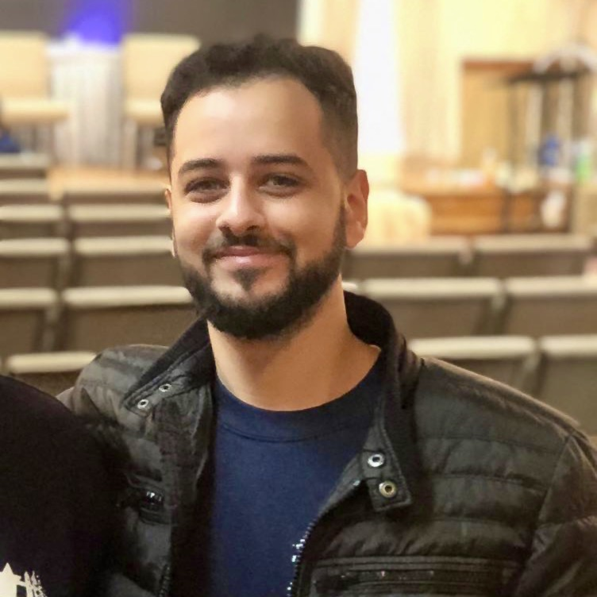
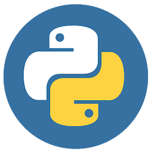
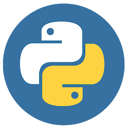

Chris Lewis Ibraheem

About Me
In June of 2013, I was in an advanced summer program held at New Jersey City University called Proyecto. Before then, I had no idea what programming was, what it took to create a website, application, video game, or anything really for that matter. I was just an eighth-grader trying to get out of class to go and play ball or video games. One of the classes offered in this program was a course HTML, and after attending many courses, I began to develop an interest. I always had a knack for technology and creation when I was younger, so when I was able to see that text on my website would appear as I use a “< p >” tag in a text editor, it struck me instantly. After that, I took Java fundamentals in Bayonne High School and loved that course. Most inspirations in my life stemmed from technology-themed things such as the film Chappie, directed by Neill Blomkamp, which introduced me to the existence of artificial intelligence.
I went to Rutgers University and initially majored in pharmacy in hopes of a safe and secure job market. But I soon realized that I was meant to work in software and website development and decided to create a strong job market by improving myself. I switched from that field and decided not to settle for the easier route. I changed into a major in Information Technology with a minor in Computer Science, and I could not be happier. There are not many people today that say they love what they learn, but luckily, I find myself in my Data Structures class with a smile on my face every day! I aspire to continue to work on my programming skills, knowledge, and technique to write flawless and efficient code to create animated, useful, and very influential technologies!
Skills
| Programming Languages |
Currently Learning |
Integrated Development Environments |
Other Skills |
| HTML |
NodeJS |
Visual Studio Code |
UNIX Filesystem Management |
| CSS |
ReactJS |
Eclipse |
BASH Scripting |
| PHP |
Backend Development |
|
| Java |
|
|
| JavaScript |
|
|
| Python |
|
|

 


Projects
Most of my website design and software development work can be located on my Github profile. My repositories and new works are constantly being upldated and added so keep a lookout foor new developments!
Click the Github logo below to be linked to my profile.

Contact Me
Phone Number:
(201) - 852 - 3675
Email:
chrisibraheem@gmail.com